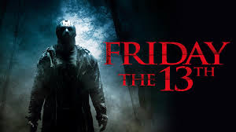

| Friday the 13th (2009) | |
|---|---|
|  | |
| Film | Friday the 13th (2009) |
| source cerita: | wikipedia |
| Tanggal rilis | 13 Februari 2009 |
| Bahasa | Bahasa Inggris |
| Durasi | 97 menit |
Pada tanggal 13 Juni 1980, Jason Voorhees kecil (Caleb Guss) menjadi saksi saat ibunya (Nana Visitor) sedang dipenggal oleh seorang konselor kamp (Stephanie Rhodes) di sekitar Camp Crystal Lake.
Sekitar 30 tahun kemudian, sekelompok teman berlibur - Wade (Jonathan Sadowski), Richie (Ben Feldman), Mike (Nick Mennell), Whitney (Amanda Righetti) dan Amanda (Amerika Olivo) - dan tiba di Crystal Lake dalam acara berkemahnya untuk menemukan beberapa ganja yang ditanam di hutan. Ketika Mike dan Whitney menjelajahi kamp Crystal Lake yang telantar, Jason dewasa (Derek Mears) mulai membunuh sisa kelompok satu per satu. Jason juga membunuh Mike, tetapi dia membawa Whitney dan memutuskan untuk menculiknya karena dia mirip seperti ibunya di usia muda.
Enam minggu kemudian, Trent (Travis Van Winkle), bersama dengan pacarnya, Jenna (Danielle Panabaker) dan teman-teman mereka yakni Chelsea (Willa Ford), Bree (Julianna Guill), Chewie (Aaron Yoo), Nolan (Ryan Hansen), dan Lawrence (Arlen Escarpeta) tiba di pondok musim panas Trent di pinggir Crystal Lake.
Kelompok ini tidak menyadari peristiwa yang terjadi beberapa minggu sebelumnya. Clay Miller (Jared Padalecki) tiba di kota dalam pencarian Crystal Lake untuk saudara perempuannya Whitney, yang dia yakini masih hidup. Clay akhirnya membuat perjalanan ke pondok Trent, disana dia bertemu dengan Jenna yang setuju untuk membantunya mencari adiknya di sisi lain danau. Sementara Clay dan Jenna mencari petunjuk, Jason membunuh Chelsea dan Nolan, yang sedang berselancar papan di danau. Clay dan Jenna sampai di suatu perkemahan tua Crystal Lake, di mana mereka menyaksikan Jason mengangkut mayat ke salah satu rumah perkemahan yang telantar tersebut.
Pasangan ini kembali untuk memperingatkan yang lain tentang Jason, yang segera tiba dan memotong kabel listrik pondok Trent. Setelah membunuh Chewie dan Lawrence yang berkelana di luar rumah, Jason menyelinap ke dalam pondok dan membunuh Bree. Trent, Clay, dan Jenna lari dari rumah tersebut, tetapi Trent tewas ketika dia mencapai jalan utama.
Jason kemudian mengejar Clay dan Jenna kembali ke perkemahan, di mana Clay menemukan sarang Jason dan menemukan adiknya dirantai ke dinding. Clay pun membebaskan Whitney, dan upaya ketiganya untuk melarikan diri saat Jason tiba. Ketiganya menemukan jalan keluar, tetapi Jenna terbunuh sebelum dia bisa keluar. Jason datang setelah Clay dan Whitney, tetapi Whitney dengan berpura-pura menjadi Nyonya Voorhees, menggunakan cinta Jason dan memori ibunya untuk mengalihkan perhatiannya cukup lama untuk menikamnya di bagian dada dengan parang milikny sendiri. Setelah itu, Clay membuang tubuh Jason yang tak bernyawa tersebut ke dalam danau. Sebelum dia dan Whitney dapat meninggalkan tempat itu, Jason muncul melalui dermaga kayu dan menarik Whitney.